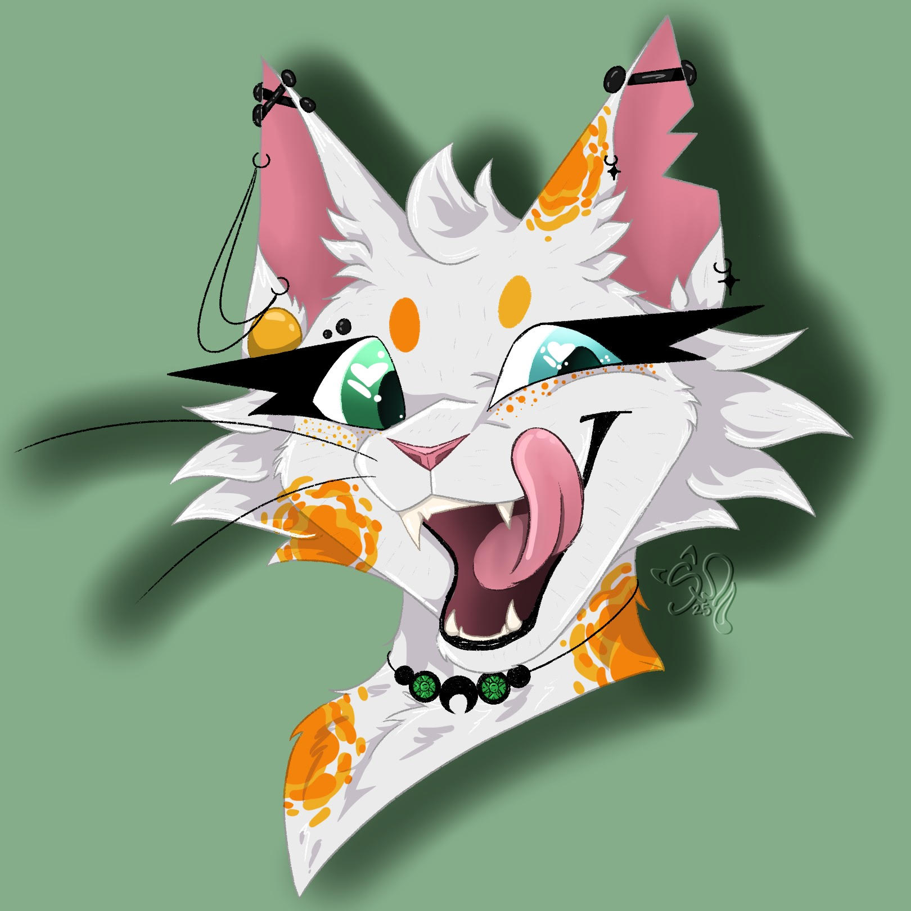

Dorthea "Dottie" Wright
 Dotti is a Druid Barbarian tabaxi within my current dungeons and dragons campaign. She is about 4 feet tall but does most of her damage by changing her shape into that of other animals. She is a strategist and soldier at heart and will never not be there to help her friends.
Home |